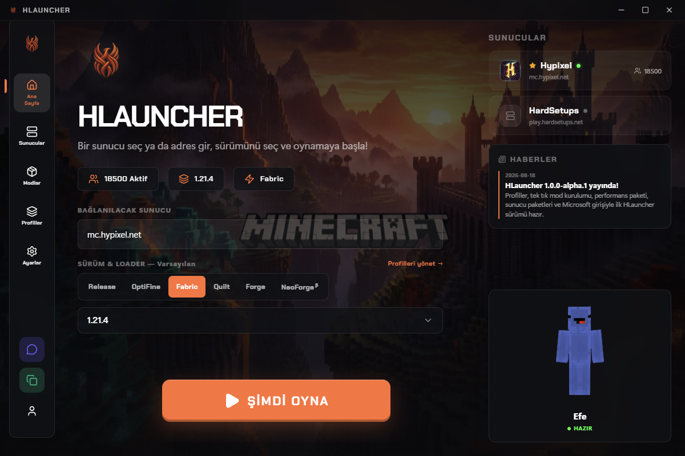

Windows için Minecraft launcher'ı. Sürümünü seç, modunu tek tıkla kur, sunucuna bağlan. Oyuncuya kurulum derdi bırakmaz, sunucu sahibine mod dağıtma derdi bırakmaz.

Alpha sürümü henüz imzasız: Windows SmartScreen uyarısında "Ek bilgi", ardından "Yine de çalıştır" seçilir. Kurulum sonrası güncellemeler arka planda otomatik gelir. Eski sürümler ve kaynak kod: GitHub Releases.
Her profilin kendi Minecraft sürümü, mod loader'ı, RAM ayarı ve mod klasörü vardır. Skyblock için Fabric 1.21.4, eski sunucun için Forge 1.12.2, ikisi yan yana yaşar.
Vanilla, OptiFine, Fabric, Quilt, Forge ve NeoForge. Seçersin, launcher kurar. Java'yı da sürüme göre (8, 17 veya 21) kendisi bulur ya da doğrulanmış olarak indirir.
Modrinth araması launcher'ın içinde: "Kur" dersin, zorunlu bağımlılıklarıyla iner. Performans Paketi tek tıkta Sodium, Lithium, FerriteCore, ImmediatelyFast ve EntityCulling kurar. Kurulu modların güncellemesi de tek tıktır.
Sunucu sahibi tek bir hlauncher.json yayınlar; oyuncu sunucuyu ekleyip paket düğmesine basar. Doğru sürüm, doğru loader ve tüm mod seti kendiliğinden kurulur. Test kaydı: 2 modluk örnek paket 2,5 saniyede kuruldu (18.08.2026).
Microsoft girişiyle premium hesabın ve gerçek skinin; istersen yalnızca kullanıcı adıyla çevrimdışı giriş. Oturum anahtarı diskte Windows DPAPI ile şifreli tutulur.
Java, mod ve paket indirmelerinin tümü SHA-1/SHA-256 özetiyle doğrulanır, bozuk inen dosya reddedilip 3 kez yeniden denenir. Arşiv çıkarmada yol kaçışı koruması vardır.
Yeni sürüm çıktığında launcher arka planda indirir, kapanışta kurar. 18.08.2026 itibarıyla dört sürüm bu kanaldan dağıtıldı (alpha.1'den alpha.4'e).
| SÜRÜM | 1.0.0-alpha.4 (yayın: 18.08.2026) |
| PLATFORM | Windows 10 / 11, x64 |
| PAKET | NSIS kurulum, 104 MB |
| MINECRAFT ARALIĞI | 1.8'den 1.21.4'e (son 3 yılın tüm release'leri listede) |
| DİL | Türkçe ve İngilizce arayüz |
| TEST | 49 birim testi, 10 gerçek ağ entegrasyon testi, her sürümde CI |
| VERİ KONUMU | %APPDATA%\.hlauncher (ayarlar, profiller, loglar) |
| KAYNAK | github.com/HardSetups/HLauncher (herkese açık) |
Sunucunun mod setini oyunculara dağıtmak için web sitene tek bir hlauncher.json dosyası koyman yeterli. Şema, alan listesi ve örnek dosya: SERVER-MANIFEST.md. Mod listeni güncellediğinde oyuncuların kurulumu bir sonraki hazırlıkta kendiliğinden eşitlenir.